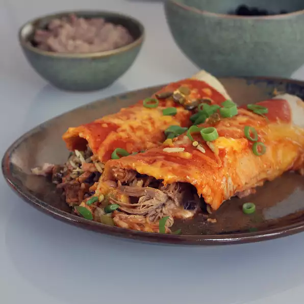

Tequila Slow-Cooked Beef Enchiladas

I get requests for this recipe all the time! I have made it with chicken and leftover Thanksgiving turkey as well, but beef is my favorite!
“Ingredients”
- 1 (3 pound) beef roast
- 3 cups tequila
- 3 jalapeno peppers, seeded and diced
- 6 cloves garlic, smashed and diced
- 3 cups uncooked rice
- 2 (15 ounce) cans black beans, rinsed and drained
- 1 (16 ounce) can refried beans
- (6 ounce) cans diced green chile peppers, divided
- 4 (7.75 ounce) cans spicy enchilada sauce
- 2 (12 fluid ounce) cans mild enchilada sauce
- 2 (6 ounce) cans tomato paste
- 1 (12 ounce) bag shredded Mexican cheese blend
- 12 (12 inch) flour tortillas, or more as needed
Steps !
- Combine beef roast, tequila, jalapeno peppers, and garlic in a slow cooker. Cover and cook on Low until tender, 12 to 18 hours.
- Shred beef using 2 forks; let it cool, about 30 minutes. Transfer shredded beef to a plate using a slotted spoon, reserving cooking liquid in the slow cooker.
- Pour reserved cooking liquid into a large pot; stir in rice. Bring to a boil. Reduce heat to medium-low, cover, and simmer until rice is tender and liquid has been absorbed, 20 to 25 minutes.
- Preheat oven to 350 degrees F (175 degrees C).
- Mix black beans, refried beans, and 1 can green chile peppers together in a bowl.
- Mix spicy enchilada sauce, mild enchilada sauce, and tomato paste together in a bowl until smooth. Spread a thin layer of sauce in the bottom of a deep baking dish.
- Spoon 1/4 cup bean mixture, 1/4 cup rice, 1/2 cup shredded beef, 1 tablespoon sauce, and 2 tablespoons Mexican cheese blend over 1 tortilla. Roll up tortilla and place seam side-down in the baking dish. Repeat with remaining ingredients until baking pan is full.
- Cover tortillas with a thick layer of sauce and remaining cheese. Spread remaining 1 can green chile peppers over cheese.
- Bake in the preheated oven until cheese is bubby and golden brown, 45 minutes to 1 hour.